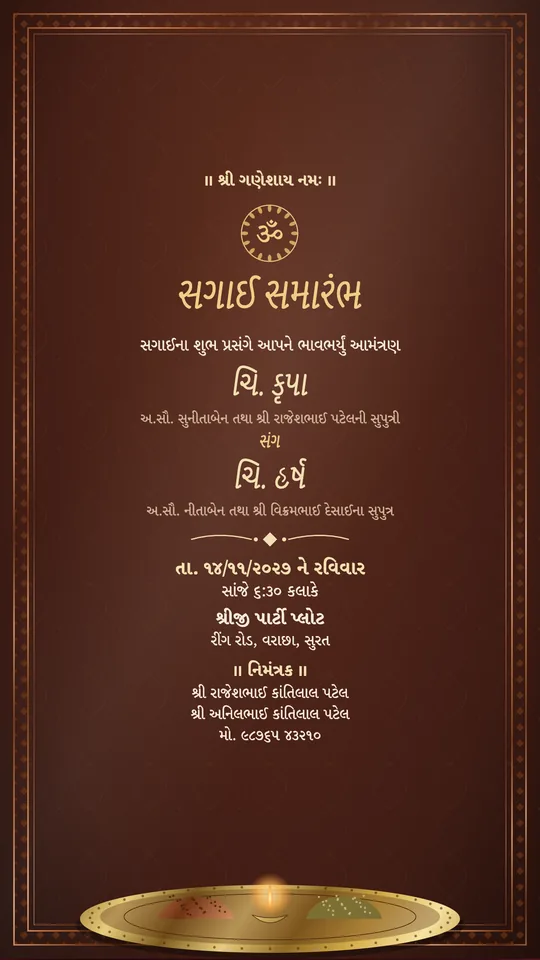

Save the Date · Ring Ceremony · Haldi · Mehendi · Sangeet · Wedding (Vivah) · Reception
Engagement and ring ceremony invitations
The engagement goes by many names: sagai, roka, mangni, sakharpuda, Gol Dhana, nischayathartham. It is usually a smaller event than the wedding, hosted by one or both families, and it is often the first time the two families appear together on a card. Name both sets of parents, give the date, time and venue, and say whether the ring exchange is followed by lunch or dinner.
If the engagement is close family only, a single phone-format image sent on WhatsApp is enough. For a larger party, print a small run on the same paper as your wedding card.
Every design below opens in the editor with sample wording for this ceremony. You can switch any card to English, Hindi, Marathi, Gujarati, Punjabi or Tamil once it is open.

Mandapam Mangalashtak
Marathi · Lord Ganesha
Paithani silk from Maharashtra inspires this card: a rich purple ground with a green and gold woven border, and a green-roofed mandap at the bottom. The sample is in Marathi under the heading साखरपुडा, the Marathi word for the engagement, and opens with a Ganesha line. Families often send it before the Mangalashtak verses of the wedding itself.

Nischayathartham Banana Leaf
Tamil · Tirupati Balaji
Nischayathartham is the Tamil engagement, when both families formally agree to the match. The card is deep green with a gold temple border, banana leaves rising from both lower corners and a temple gopuram at the centre. Small gold bells hang along the top. Text is in Tamil with an invocation to Venkateshwara (Balaji).

Rose Gold Solitaire
English · Floral, no deity
Blush pink with a fine rose-gold frame and a single solitaire ring sparkling at the bottom. It is the most modern of the ring ceremony cards, with English text in script and serif and no religious line. A good fit for an engagement party, a ring exchange at a hotel, or a couple announcing the engagement on social media.

Gol Dhana Brass Thali
Gujarati · Lord Ganesha
In Gujarati families the engagement is often called Gol Dhana, after the jaggery and coriander seeds shared to mark it. This card is chocolate brown with gold filigree corners and a brass thali glowing at the bottom. The sample text is in Gujarati under સગાઈ સમારંભ, with a Ganesha line at the top.

Misri Roka Phulkari
Punjabi · Ek Onkar
Roka is the Punjabi ceremony that 'stops' the search for a match, often sealed with misri, rock sugar. This card is blush pink with a sage phulkari star at the bottom, a nod to the embroidered shawls of Punjab. Text is in Punjabi under ਮੰਗਣੀ ਦੀ ਰਸਮ, opening with Ek Onkar.
Not sure what to write? Read the wording guide for every ceremony.